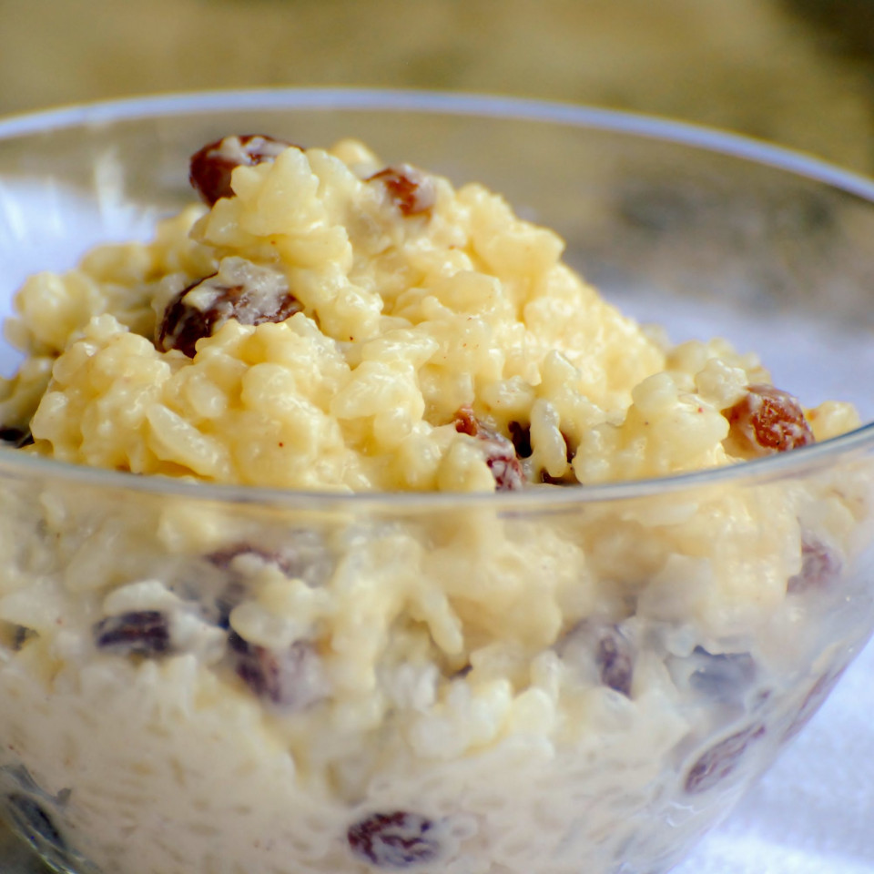

Description:
Well, this tender, thick, creamy, white load of rice pudding
might have you addicted.
Ingredients:
- 3/4 cup of uncooked white rice
- 2 cups of milk, divided
- 1/3 cup of white sugar
- 1/4 teaspoon of salt
- 1 egg, beaten
- 2/3 cup of golden raisins
- 1 tablespoon of butter
- 1/2 teaspoon of vanilla extract
Steps:
- Bring 1 1/2 cups of water to a boil in a saucepan; stir
rice into boiling water. Reduce heat to low, cover, and simmer
for 20 minutes
- In a clean saucepan, combine 1 1/2 cups of cooked rice,
1 1/2 cups of milk, sugar and salt. Cook over medium heat
until thick and creamy, 15 to 20 minutes. Stir in remaining
1/2 cup of milk, beaten egg, and raisins; cook 2 minutes more,
stirring constantly. Remove from heat and stir in butter and
vanilla.
Link to webpage:
Link